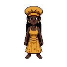
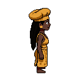
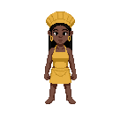
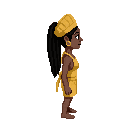
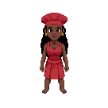
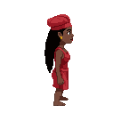

Chef (her) — 3 attempts · all feminine ✓ · cheetah apron ✗ (came out solid)
front + side · testing your "beautiful / really pretty" cue against the dreadlocks


A — gold/yellow
"beautiful"


B — yellow, petite
"really pretty"


C — red
"beautiful petite"
dreadlocks + chef hat held on all three · aprons rendered solid (cheetah print didn't take)